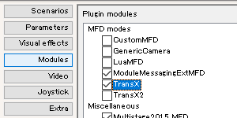

Orbiter本体に同梱されているのは旧バージョン。
最新版に比べて機能が制限されている。
バグも残っているため、必ず更新すること。
Downloadをクリック。
出てきた青色のリンクをクリック。
Orbiter2010対応版
TransX MMExt2 for Orbiter 2010
Orbiter2016対応版
TransX MMExt2 for Orbiter 2016
LaunchMFDなどのMODと、TransXを連携させるためのMOD。
Orbiter2010対応版
ModuleMessagingExt for Orbiter 2010
Orbiter2016対応版
ModuleMessagingExt for Orbiter 2016
上記のファイルをそれぞれ解凍する。
中のファイル・フォルダをコピーして、Orbiterフォルダに上書き。
Orbiterを起動して、Modulesをクリック。
TransXとTransX2の両方にチェックを入れる。※

※通常使用するのはTransXだが、両方チェックする
Visual C++のランタイムを導入する。
Visual Studio 2013 の Visual C++ 再頒布可能パッケージ
インストール手順はリンク先のページ下部を参照。
Orbiterを起動して、Parametersをクリック。
MFD refresh [sec]の値を小さくする。
この例では0.10に設定している。
PCスペックによっては、かえって重くなることがある。
そのような場合は、1.00に戻す。
最新バージョンでは、以下のような機能が追加されている。